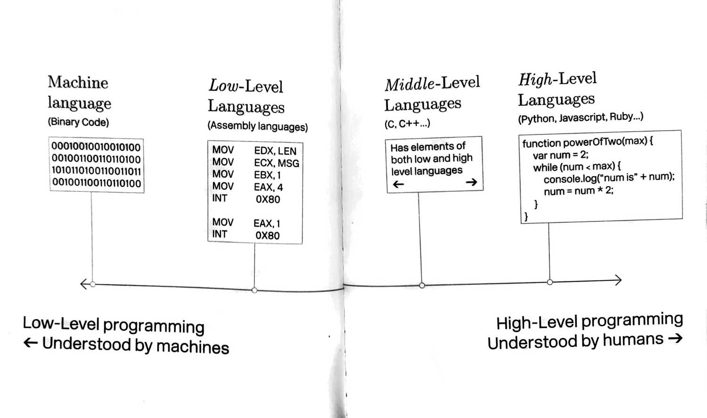
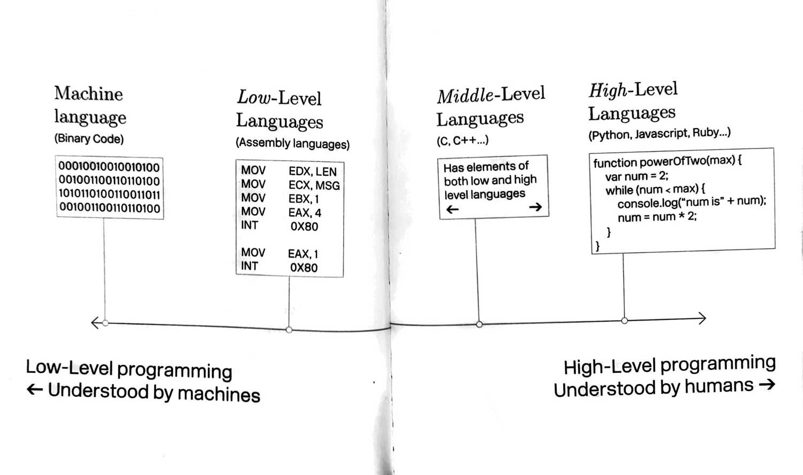
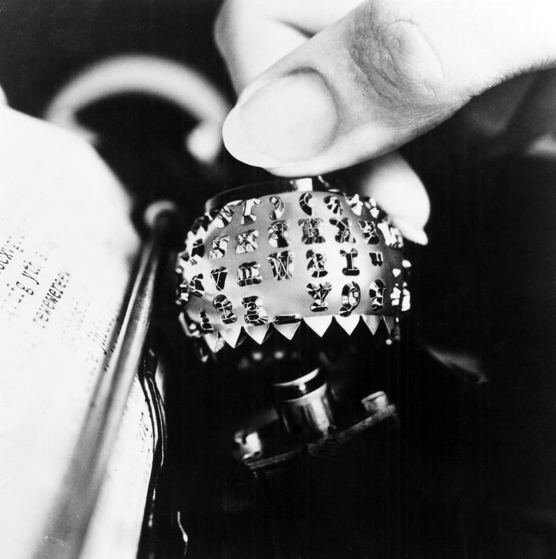

Fig.01 Analytical Engine
.............................................................................................................................
I was invited by Katrin Mayer to join in the investigation of her speculative question of what a feminist perspective on code might look like. We began collaboratively researching into internet history and were especially interested in thinking about where code came from, how it was made, how it looked and what it could look like. Code, computing and programming are of course inextricably linked to the history of technology and the people who operated it; turns out, they were women. Conditioned to think of computing as a predominantly male domain, we were fascinated to learn of its female origins thanks to excellent research done on this topic in recent years, and are excited to see how a feminist rewriting of computing history is well under way today [1] .
[1] Computer has two separate yet related meanings. A computer, from the early 17th century and up until the first half of the 20th century, referred to “someone who computes.” It was a person whom, by hand, performed time-consuming and tedious mathematical calculations. As the work of such Computers was akin to secretarial work, it was often the work of women.
Fig.01 Analytical Engine
Amongst the earliest technological innovations that would change the idea of what we now understand as “computing” was the Analytical Engine by Charles Babbage [2] . He is widely credited as the inventor of the machine (the hardware, though a term coined much later) while his associate, mathematician and Computer Ada Lovelace, was the brilliant mind that conceived of its algorithms (what we now call software), left unrecognized for a century.
[2] The Analytical Engine would never be completed, but it represents the conceptual dawn of the computer age. (...) the strikingly original notes that Ada prepared to explain this new kind of machine would presage the literature of computer science by nearly a century. To demonstrate how the engine could calculate Bernoulli Numbers without any assistance from a “human hand or head,” she wrote mathemathical proofs that many scholars characterize as the first computer programs ever written (...) she was the first to consider that a machine could have applications beyond pure calculations (...)
.............................................................................................................................

Fig.02
Daguerreotype of Ada Lovelace,
one of only two known photographs of her
.............................................................................................................................
But the Analytical Engine was yet too far ahead of its time, and while more efforts were made to invent technology that would aid in computing, data had to be processed and calculated painstakingly by hand. The fields of mathematics, astronomy and physics were dependant on the work of human Computers, many of them women. There was a widespread biologistical belief that the meticulousness and patience necessary to doing this kind of work were supposedly inherent “female” traits, “women’s work.” Though it enabled women to enter the workforce and strive toward some level of independence, the female prevalence in these jobs was in truth mostly due to the fact that they were paid much lower wages. It was when computing power was measured in “kilo girls”: 1000 hours of (female) computing labour.
With time,
Female hands lifted from pencils and slide rules to desk calculators and switches, then relays and punch card tabulators. Coaxing information into and out of the new machines was considered a woman’s job, too, on the level with typing, filing documents, and patching phone calls from place to place.Typewriters, switchboards, computers: As women were seen as mere “operators” of machines, their work was assumed to be “more handicraft than science” and thus “more mechanical than intellectual” 6. However, the true merit of their work was just harder to spot than the more tangible developments in engineering, a field mainly dominated by men. These womens’ lasting accomplishment was in fact running, performing, and virtually embodying what was becoming a global informational infrastructure.
(...) For a few centuries, groups of women working in hives and “harems” were the hardware (...). It’s the accumulation of all those steps, executed simultaneously and collectively, that prefigured our connected, caclulating, big-data world. Alone, women were the first computers; together, they formed the first information networks. (...) Long before we came to understand the network as an extension of ourselves, our great-grandmothers were performing the functions that brought about its existence.

I thought about how what I am seeing while programming this website might
relate to the work these women were doing. Using technology, virtual
models of thinking, working intimately with text-as-data. The way code
looks until this day has its origin here: “Typing” meant using machinery
that by its design determined its characteristic visuality.
 In the beginning, typewriters did not differentiate between the widths of
individual letters, and thus each letter was printed with the same width.
This meant that some particularly wide letters (like the m and most
uppercase letters) had to be squeezed to fit the space, and others (such
as i, l, I) had to be modified to fill out more space, as to not cause too
many gaps in the text. the i the l the I The necessary letter
modifications resulted in a new genre of monospaced typefaces. They turned
out to be particularly useful for clearly distinguishing letters, for
writing data in an orderly manner, and for helping the eye compare lines
and layout. All of this is still vital when writing and reading code, and
so this choice of typeface has prevailed in programming until today. I
began to think about the connections between text and code; letters and
technology; between typing, writing and coding. But before algorithms were
written, typed or punched, they were wired. It was women who were tasked
with figuring out the machine; and by doing so, they invented software
programming. Betty Holberton, Jean
Jennings Bartik, Kay McNulty, Marlyn Wescoff Meltzer, Ruth Lichterman, and
Frances Bilas Spence had been previously working as Computers on
calculating missile trajectories and were recruited to find a way to get
the ENIAC running, an early electronic general-purpose computer covered in
switches, cables and valves. The engineers of the machine had not
considered how its programming would work, and so the ENIAC Six, as the
women came to be known, had to find it out themselves.
In the beginning, typewriters did not differentiate between the widths of
individual letters, and thus each letter was printed with the same width.
This meant that some particularly wide letters (like the m and most
uppercase letters) had to be squeezed to fit the space, and others (such
as i, l, I) had to be modified to fill out more space, as to not cause too
many gaps in the text. the i the l the I The necessary letter
modifications resulted in a new genre of monospaced typefaces. They turned
out to be particularly useful for clearly distinguishing letters, for
writing data in an orderly manner, and for helping the eye compare lines
and layout. All of this is still vital when writing and reading code, and
so this choice of typeface has prevailed in programming until today. I
began to think about the connections between text and code; letters and
technology; between typing, writing and coding. But before algorithms were
written, typed or punched, they were wired. It was women who were tasked
with figuring out the machine; and by doing so, they invented software
programming. Betty Holberton, Jean
Jennings Bartik, Kay McNulty, Marlyn Wescoff Meltzer, Ruth Lichterman, and
Frances Bilas Spence had been previously working as Computers on
calculating missile trajectories and were recruited to find a way to get
the ENIAC running, an early electronic general-purpose computer covered in
switches, cables and valves. The engineers of the machine had not
considered how its programming would work, and so the ENIAC Six, as the
women came to be known, had to find it out themselves.
However, despite their doubtless pioneering innovations and the significant importance of their intellectual work, they were not credited. Instead, they were often portrayed either more as the computer’s mechanics or pretty photo models hired to pose in front of it.
When the ENIAC was finally unveiled to the public in 1946, there was no mention of the women who made it run and effectively invented modern programming. A 1946 New York Times article announcing the “amazing machine,” only credits the male inventors John Mauchly and J. Presper Eckert. (...) the ENIAC Six (as the women who programmed the ENIAC became known) were almost erased from history.After decades of suffering disregard, they have finally started to receive recognition in recent years. Punchcards, though not an entirely new technology, were adopted from around 1930 to write and store programs and data. Punchcards had already been used since the 18th century to operate weaving looms and store pattern instructions – another example of a traditionally female occupation at the intersection between information technology and manual labour. The job of the data typist emerged. This was what code looked like for at least half a century: typed and punched, on paper.
This type of data storage transmits data through holes and non-holes, through binary logic, on/off, the zeroes and ones that machines understand. Of course, this is not how humans process information, so some kind of translation needed to happen between human language and machine language, between words and calculations. Grace Hopper, a female computer scientist, effected a major breakthrough in how machines and humans now talk to each other. She thought that code should be written in human language.
Grace Murray Hopper was an American computer scientist known for
popularizing the idea that programming languages could be independent from
machines, and that an English-based language was possible. (...) She
recalls: “(...) It’s much easier for most people to write an English
statement than it is to use symbols. So I decided data processors ought to
be able to write their programs in English, and the computers would
translate them into machine code. (...) I would say ‘Subtract income tax
from pay’ instead of trying to write that in octal code or using all kinds
of symbols.” (0) INPUT INVENTORY FILE-A PRICE FILE-B ; OUTPUT PRICED-INV
FILE-C UNPRICED-INV FILE-D ; HSP D . (1) COMPARE PRODUCT-NO (A) WITH
PRODUCT-NO (B) ; IF GREATER GO TO OPERATION 10 ; IF EQUAL GO TO OPERATION
5 ; OTHERWISE GO TO OPERATION 2 . (2) TRANSFER A TO D . (3) WRITE-ITEM D .
(4) JUMP TO OPERATION 8 . (5) TRANSFER A TO C . (6) MOVE UNIT-PRICE (B) TO
UNIT-PRICE (C) . (7) WRITE-ITEM C . Hoppers programming language
FLOW-MATIC
 

Programming today carries her legacy. First and foremost, code is a language, with syntax and grammar and vocabulary, plus some logic. We can invent code much like a sentence, choosing the words that fit best. Code is text both in the sense that it is composed by letters and that it can be written and read. When thinking about Hoppers legacy, language and the readabilitiy of code, one might ask: Who actually reads the code? In the case of this website, I write code for the browser to read, interpret, execute. The browser is my audience. And not only does it speak a different language, it has a wholly different way of reading. Did you know that spaces take browsers just the same time to read as actual letters? Every glyph typed – even if it is a blank space – results in information stored, and corresponds to storage space or file size. This is why proper programmers storetheircodewithoutspaces. The absence of a letter is not nothing, blank space not 0. The only humans reading the code I write is myself and possibly other coders working on it with me, who are likely already tuned into conventional abstractions and lazy shortcuts. Go to your favourite website, right click, inspect the code. Can you read what’s going on? We thought – but then how could code be written as humanly readable as possible, even for those who don’t code? Please right click right here and inspect this website’s code. Disclaimer: Writing code that is both functional to browsers and readable to humans leads to many inefficient workarounds and plenty of failure, because without keeping some symbolic and syntactical conventions, browsers would quite simply not understand. But maybe try it, climb all the way up, then travel down and go inside.
I hope it becomes clear how the code was written hand in hand with its design and named by its content; a conceptional attempt – ambitious and doomed – to place central emphasis on being able to navigate the website just based on its source code, even through the non-coder’s eye. The letters in code are data and thus stand purely for the information of which symbol is used. But this information is manifested as letters of a certain shape; they are not only read but seen, too. Every text needs a typeface. This text, this code, this website needed a typeface.
Early typewriters usually came with one typeface built right into the machine. The introduction of changeable typefaces moved the typewriter one step closer to becoming a modern productive word processor and precursor of today’s desktop computers. The IBM Selectric, released in 1961, was one of the first machines where fonts could be switched easily and characters could be stored on a magnetic band, making it thus an important bridge technology between typewriter and computer.
Dual Basic was one of the many typefaces available for the Selectric. I liked the typeface for its openness and clarity; also, it lacks the usual modifications done on monospaced typefaces to fill visual holes. It is almost like a text typeface only with equalized widths; it seemed like an interesting in-between, unsure of which technology or age to belong to.
I found that in my investigation into all this, the harder I looked, the blurrier the lines became between coding, writing and typing. Might the distinction between them be simply determined by my choice of typeface and machinery? For coding, I use a code editor and a monospaced font, because it is easier for reading text that is code. For writing, I use a proportionally spaced typeface, because it is easier for reading text that is not code. In both cases, I press buttons, I type. The typeface you are reading and seeing now is Coda, designed as part of this project. It is based on the framework of Dual Basic and modified in two directions: In one, whitespace is taken out, and the monospaced becomes proportional, much nicer for reading this text right now. In the other direction, fictional serifs are added, to transform it into a fully functional coding typeface. Every letter and every way a letter’s line is made, drawn, chiseled or printed has a historical and technological provenance. Today, typefaces are produced digitally; they are software, they are code, thus themselves written and composed of text. We can think about variables, interaction, output. Code is text is type is font is code?
Let me tie at least one of many loose ends here. You may rightfully wonder: what happened to women programmers? Why is the image we have of a programmer today automatically, reflexively, that of a man? I have mentioned the wage discrimination that had been structurally present from the moment women entered the modern workforce. There was also an unwillingness by computer companies to provide models of work that would help to balance childcare with a career. And as computing developed into an increasingly important and profitable industry, the image, value and requirements of the profession changed profoundly. A conference held in 1968 to address the so-called “software crisis” (a consequence of programming’s difficulty to keep up with ever accelerating technological progress) initiated a movement to re-brand programming as “software engineering.” What sounds like a merely semantic change would however come to have far-reaching implications, determining who could gain access to the field and who couldn’t.
Women faded from the profession. They were never truly gone, but harder to be found. There were still women where networks were formed; hypertexts created; knowledge organised; search engines built; message boards hosted; connections drawn... But the landscape of computing, and the idea of what it represents and how it’s represented, changed to such an extent that female contributions were in many parts forgotten. This is of course an incomplete history, told subjectively through the lens of Katrins and my research, the books we read, the course of our conversations, personal interests and own experiences. I never had or knew of female programmer role models. The suggestion to code my own website and not use Geocities for the homepage of my email writing club came from my stepfather, a software engineer, and sparked my fascination with what pure text can create. Though off to an early start, programming was never in the realm of what I considered for my professional future, because I simply never knew that someone like me could be doing something like that. It took me a long time to realize that if I wanted to see it, I needed to be it – or at least try to. I am happy to see more women, now; again. This research has been instrumental in discovering somewhat of a 1ineage.
This is the structure of the web’s native tongue, a programming language called HTML. It is especially prone to endless fractal-like nesting of elements inside and alongside one another. Structures are built with a syntax that wraps, creates vessels, holds, embraces, stacks, plunges, births. Thus, web code knows words and concepts of inheritance and ancestry. :first-child, :nth-child(n), :last-child, children, childrenNodes, siblings(), nextSibling, parentNode, parent(), parents(), parentsUntil(), gparent(), just to name a few. This is what it looks like:
Thankfully, we do not write code on empty sheets of paper anymore. We use code editors; fancy text programs that do all kinds of things to help find our way in the matrix. There, lines have proven to be the most efficient crumbs for finding back, connecting beginnings and ends. Looking at our digital interfaces, lines often signal traces back to an origin, to the first element, post, tweet or email.
We were also reminded of the warps in fabrics, vertically structuring a textile piece that back in the day might have been programmed by punchcards, ancestors to the code written here. The lines you can see on this website visualise how the code of this website looks in the moment of coding it. Its design mirrors its code, shows the process, reveals its own making, in a way. Lines have a way of accumulating the more we write, the deeper we dig and the longer we go. It means something is building: software, patterns, conversations, layers, story. These lines we can create ourselves; they make a structure that we can use to crawl in between hierarchies and chronologies; and they are the scaffold this website, this text, this story builds on.